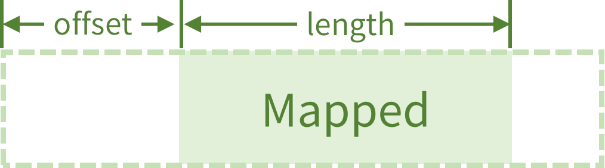

OpenGL超级宝典第七版学习笔记 (5)：数据
- 如何创建 缓冲区对象（buffer） 和 纹理（texture），用来存储数据
- 如何让 OpenGL 自动填充顶点属性
- 如何从 shader 访问 buffer 和 texture 的数据
显卡可以吞吐大量数据，每次向 OpenGL 传输少量数据会浪费性能。OpenGL 主要通过两种方式来存储、访问数据：Buferr 和 纹理：
- buffer 将数据线性存储在一个内存块中，作为通用的容器
- texture 用来存储多维的数据结构（比如图像）
Buffer
- buffer：内存中分配的一块区域，线性存储数据
- buffer 可以里的数据可以传递给 shader，也可以用来存储 shader 产生的数据
创建 Buffer
最常用的函数：glCreateBuffers()，用来同时创建 buffer 对象：
1 | void glCreateBuffers(GLsizei n, GLuint *buffers); |
- 第一个参数
n为要创建 buffer 对象的个数，也就是说这个函数可以一次性创建多个 buffer - 第二个参数是一个
GLuint类型的指针，可以看成glCreateBuffers的返回值了
代表这些创建的 buffer 对象
常见的使用方式：
1 | GLuint buf; |
这样子就创建了一个 buffer，以后就可以通过 buf 这个变量来使用。
如果要一次性创建多个 buffer，第二个参数可以传一个数组进去：
1 | GLuint bufs[3]; |
这里不难发现，OpenGL 在创建一个对象后，会给我们分配一个 GLuint 变量，通过这个 GLuint 变量来操控
OpenGL 对象。在 OpenGL 的文档里，这个 GLuint 变量被称为对象的 name 属性。
绑定 buffer 对象
创建 buffer 对象之后，可以通过调用 glBindBuffer() 函数，来确定 buffer 对象的类型，用来说明以后这个 buffer 被用来来干什么，函数原型如下：
1 | void glBindBuffer(GLenum target, GLuint buffer); |
在 OpenGL 里使用一个 buffer 之前，就必须调用glBindBuffer()函数，来将 buffer 添加到 opengl 的上下文中。
比如说要将 buffer 对象里的数据绑定为顶点属性：
1 | GLuint buf; |
上面传入的 GL_ARRAY_BUFFER 被称为 buffer 对象的绑定目标，也可以称为绑定点。
到这里只是创建和绑定了一个 buffer 对象，并没有给 buffer 分配空间:
1 | GLuint buf; |
分配内存空间
分配空间的操作主要是通过调用这两个函数：
1 | void glBufferStorage(GLenum target, |
这两个函数功能一致，都是给 buffer 分配内存空间。如果之前 buffer 对象已经绑定了，就可以通过第一个函数的 target 参数来分配空间。
size：分配多少内存，以字节为单位data：用来初始化（复制到） buffer 的数据，可以传递 null，这样就不会复制任何数据，如果要传入 data 对 buffer 进行初始化，data 的大小必须大于等于 size 字节。flags：只起到给 OpenGL 提供信息的作用，说明 buffer 在存储时有那些要求。和其他的 OpenGL 命令有关
buffer 对象在分配内存后，内存空间的 size 和 flag 属性是不可变的。如果要改变一个 buffer 对象的大小，就只能先将销毁内存空间，再调用上面两个函数重新分配。
比如要给 buffer 分配 1MB 的空间，并将字符串 “hello world” 初始化 buffer 的内存空间:
1 | # use std::ffi::c_void; |
下面的函数需要在给 buffer 分配空间后调用：
更新 buffer 缓冲区的内容
一组函数：
1 | void glBufferSubData(GLenum target, |
毕竟要更新 buffer 的内容，因此在给 buffer 分配空间时，需要告诉 OpenGL 说 这个 buffer 是可以直接更新的 ，即在调用 gl(Named)BufferStorage 时，将 GL_DYNAMIC_STORAGE_BIT 传入 flag 传入函数参数。
offset参数表示要写入的起始位置，以字节为单位size表示要写入多大的数据，以字节为单位
简单的例子，向 buffer 存入一组三角形的顶点数据：
1 | # use sb7::application::Application; |
内存映射
到此为止，还只是给 buffer 分配空间，以及更新 buffer。下面一组函数可以用来读取/更改 buffer 的内存:
1 | void *glMapBuffer(GLenum target, |
将 buffer 的整个存储空间映射到客户端的内存空间上，这样就可以通过指针来读写 buffer 的内容了。access 有三种取值：GL_READ_ONLY，GL_WRITE_ONLY，GL_READ_WRITE。
对应 glBufferStorage / glNamedBufferStorage 函数的 flag 参数：
GL_MAP_READ_BIT，GL_MAP_WRITE_BIT
当不再需要读写 buffer 时，调用 glUnmapBuffer / glUnmapNamedBuffer 来结束内存映射
读写：
1 | # use sb7::application::Application; |
glMapBuffer 的开销和 buffer 的大小呈正比。毕竟映射的是整个buffer；
更加轻量：
1 | void *glMapBufferRange(GLenum target, |
注意 access 的类型是 GLbitfield。

1 | # use gl::types::GLintptr; |
填充数据、在 buffer 间复制数据
填充：
1 | void glClearBufferSubData(GLenum target, |
size,offset：填充区域，字节为单位type: 传入的数据类型，取值和对应的数据类型：type 对应的 OpenGL 类型 GL_BYTE GLchar GL_UNSIGNED_BYTE GLuchar GL_SHORT GLshort GL_UNSIGNED_SHORT GLushort GL_INT GLint GL_UNSIGNED_INT GLuint GL_FLOAT GLfloat GL_DOUBLE GLdouble format: 传入的数据格式：GL_REDGL_RGGL_RGBGL_RGBA：一维、二维、三维、四维internalformat：buffer 内部存储的数据格式：gl4/glClearBufferSubData
简单示例作者在整本书里就没有用过这个函数……：
1 | # use gl::types::GLfloat; |
buffer 间复制，类似于 C 里的 memcpy 函数（Rust 里对应的函数为std::intrinsics::copy）:
1 | void glCopyBufferSubData(GLenum readTarget, |
上面第一个函数，也就是 glCopyBufferSubData 需要两个 buffer 绑定不同的绑定点。 openGL 也提供了 GL_COPY_READ_BUFFER 和 GL_COPY_WRITE_BUFFER 这两个绑定目标，这时候就可以用上了。
1 | # use sb7::application::Application; |
将 buffer 数据传递到顶点着色器
新的 OpenGL 对象：顶点数组对象(vao)，用来存储顶点数组的状态。顶点数据存在另一个 buffer 对象里：顶点缓冲区对象(vbo)。
buffer 存储顶点数据（顶点的位置、颜色、法向量……等属性），vao 则管理这些存储顶点数据的 buffer。vao 作为 shader 与 buffer 的桥梁。
要从 buffer 读取顶点数据，就得创建一个 vao:
1 | # use gl::types::GLuint; |
建立顶点着色器内部顶点属性与 buffer 的关系，将下标为 bindingindex 的 buffer 内部数据作为顶点属性 attribindex 的输入：
1 | void glVertexArrayAttribBinding(GLuint vaobj, |
attribindex顶点属性的下标（shader 里指定)bindingindexvao绑定的顶点缓冲区对象下标，这个 buffer 存放一个顶点属性的数据
对应的 buffer 必须通过 glVertexArrayVertexBuffer 函数挂载到 vao 上：
1 | void glVertexArrayVertexBuffer(GLuint vaobj, |
- vaobj: 与 buffer 绑定的 vao
- buffer: 与 vao 相绑定的 buffer
- offset: 偏移量（起始位置），字节为单位 shader 从什么地方开始读数据
- stride: 每个顶点属性的大小
使用方法：
1 | # use gl::types::GLuint; |
在通过 vao 搭建好 buffer 与顶点属性的桥梁之后，还需要给 OpenGL 说明顶点属性的格式，即说明一个顶点属性由几个元素组成，每个元素的数据类型是什么，以及其他配置：
1 | void glVertexArrayAttribFormat(GLuint vaobj, |
size: 这个顶点属性由几个数组成
- 颜色、位置：4 （rgba, xyzw）
type: 数据类型：GL::FLOAT, GL::UCHAT 等
normalized: 在传入着色器之前，是否对数据进行正规化处理
只对整数数据有效，浮点数不会进行正规化- 无符号整数转换成 [0.0~1.0] 的浮点数
- 有符号整数转换成 [-1.0~1.0] 的浮点数
relativeoffset： 相对偏移量
第 n 个顶点在 buffer 内部的读取位置和offset, relativeoffset 的关系：
1 | location = offset + n * stride + relativeoffset |
在设置完顶点属性的格式后，就可以调用 glEnableVertexArrayAttrub() 来启用之前的配置了：
1 | # use gl::types::GLuint; |
完整的配置过程如下：
1 | # use gl::types::GLuint; |
也可以将顶点属性放到一个结构体里，然后存到一个 buffer 上：
1 | # use gl::types::GLuint; |
Uniform 变量
- 可以在应用程序内将数据直接传递给 shader
在 shader 里声明 uniform 变量：
1 | uniform float time; |
uniform 变量需要在 C++ / Rust 代码里传入数据，glsl 内不能对 uniform 变量赋值。
但是可以在声明的时候可以赋初值：
1 | uniform float a = 12; |
向 uniform 变量传递数据
调用 glGetUniformLocation() 查询 uniform 变量的位置，之后就可调用一系列 glUniform* 函数来给 uniform 变量传递数据：
glUniform* 函数的原型，完整：glUniform
1 | void glUniform1f(GLint location, |
这里的 location 参数需要调用 glGetUniformLocation 来查询：
1 | GLint glGetUniformLocation(GLuint program, |
glsl定义 uniform 变量：
1 | uniform float time; |
在 Rust 里给这两个 uniform 变量赋值：
1 | let name = CString::new("time").unwrap(); |
也可以在 glsl 里指定 uniform 变量的 location:
1 | layout (location = 0) uniform float time; |
传递数据：
1 | gl::Uniform1f(0, 1.0); |
glUniform*() 有一组以 v 作为后缀的函数，可以传入指向数据的指针：
1 | void glUniform3fv(GLint location, |
给 vec4 变量传递数据：
1 | uniform vec4 vcolor; |
1 | let vcolor = [1.0, 1.0, 1.0, 1.0]; |
给 vec4数组传递数据：
1 |
|
1 | # use gl::types::GLuint; |
传一维数据：
1 | let data = 1.0f32; |
传递矩阵：
1 |
|
1 | # use gl::types::GLuint; |
对应的效果如下：
通过 uniform 变量设置变换矩阵
初始化顶点数据：
1 | # use gl::types::*; |
设置变换矩阵：
1 | # ... |
在窗口大小发生改变时，更新投影矩阵：
1 | # ... |
将变换矩阵和投影矩阵传递到shader里：
1 | # impl Application for App { |
顶点着色器：
1 |
|
片段着色器：
1 |
|
绘制多个物体：在 render 函数里多次调用 glDrawArray 就行：
1 | # use gl::types::*; |